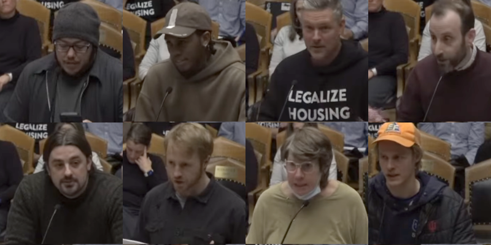
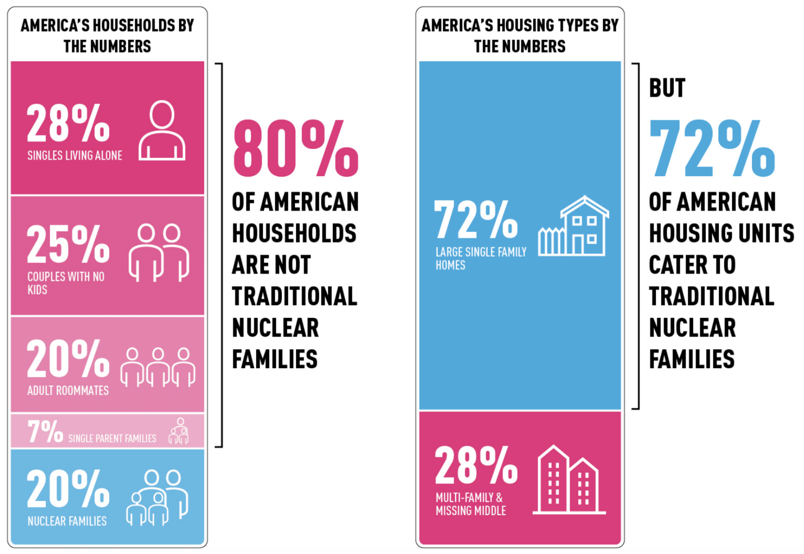

Asheville City Council - December 9th Meeting
December 22, 2025
Over the past year we’ve been making an effort on this blog to recap Asheville City Council meetings where big housing decisions have been made, so you can get a sense of who on the Council supports housing, who is less likely to do so, and what kinds of votes end up in front of the council in the first place.
This recap is a little different.
There were no votes related to housing in front of the council members on Dec 9th (Although the council did vote to appoint a new member to the city’s Planning and Zoning Commission, and that board has some degree of influence over what housing gets built and where.)
Nonetheless, it might have been a night of some consequence for the future of Asheville’s housing landscape and the costs of housing borne by its residents.
Support for “Missing Middle” Changes in Asheville
At the end of each city council meeting, after the business on the agenda has been concluded, Asheville City Council has a standing invitation to anyone that wants to speak on anything to spend three minutes doing so. So some of our members joined members of Strong Towns Asheville to speak on the subject of Asheville’s “missing middle” initiative, which has been effectively frozen since prior to Helene.
More than a dozen residents took their turn to speak to City Council expressing their desire to see the city stop delaying the implementation of this initiative. We also passed along the voices of a much greater number of residents, by way of an open letter that we emailed to council that morning. You can read that letter here.
You can watch all of the commenters on the city’s YouTube channel, starting at this timestamp.

Some highlights:
- Two commenters shared personal experiences where themselves or a neighbor were displaced as renters. Missing middle reforms, we’ve noted before, are an anti-displacement measure because they provide tenants with more options in a given neighborhood that meet their needs and are likely to be lower cost options. A greater amount of housing in a neighborhood also helps with rents by tilting the market in the favor of tenants rather than landlords.
- Young and old residents shared their concern for what’s sometimes called the “housing mismatch” in our city. Too many homes that take up too much land are devoted to nuclear families with two parents and one or more kids. But most of the households here and across the country do not have any kids at all. The lack of housing diversity in our city falls hardest on working people that are very young, and haven’t built any wealth but don’t need a lot of space, as well as older folks that find it hard to downsize because of a lack of options.
- Several commenters spoke about the need for “missing middle” reforms in order to combat sprawl and promote more walkability and greater viability for public transit and biking. As our own city’s 2023 Missing Middle Housing Study noted, middle housing is intended primarily for infill in existing neighborhoods that are close to downtown or other walkable (and potentially walkable) neighborhoods. And the presence of more residents in those neighborhoods can in turn boost the viability of local businesses, services, and amenities—reducing long-distance automobile travel.

City Council’s Response
It’s not required or typical for city council members to respond directly to the citizens delivering comments in these open periods. However, most of the councilors present took some time to speak on the issue—in one way or another—after the comment period concluded.
Generally speaking, we were heartened that a solid majority of city council members there went on the record to express a relatively strong desire to see the city pass middle housing reforms in the new year. (You can watch the entire exchange here.)
To be clear, at least among some people, there is still uncertainty, confusion, and fear around the question of whether or not these common sense land-use and permitting reforms might somehow hurt rather than help the housing situation in some neighborhoods. The short answer is that they won’t. But we understand the desire for longer answers. And we’ve been trying to provide some measure of these—just peruse this blog—and will continue to try to do so.
What’s Next?
While the bigger middle housing reforms that we’ve been anticipating over the past two years may take some time to be put back on track, City Council is likely to take up a very minor adjustment to the UDO (Unified Development Ordinance, our zoning code) as it pertains to Accessory Dwelling Units (ADUs), in January. Stay tuned, and we’ll see you in the new year.
Additional Media Coverage
- Blue Ridge Public Radio: “Asheville delays police station move, funds debris removal”